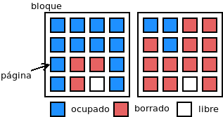
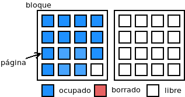

5.7. Eliminación de datos¶
La eliminación efectiva de los datos es fundamental cuando hemos almacenado datos sensibles en un dispositivo y lo sustituimos por otro. Antes de empezar, sin embargo, tengamos presentes dos cosas:
El borrado de archivos con las herramientas básicas del sistema operativo (rm en Linux) no borra realmente los datos, simplemente marca los bloques que éstos ocupaban como reutilizables[1].
Si habíamos decidido cifrar los datos, su eliminación efectiva no tiene importancia alguna: los datos serán absolutamente inaccesibles sin la clave con que se cifraron.
Sabido esto, si nuestra intención es eliminar realmente los datos del disco, tenemos dos opciones:
Destruir físicamente el disco, a fin de que quede inservible y sus datos sean absolutamente ilegibles. A este respecto, es muy interesante este artículo de Xataka.
Utilizar técnicas de borrado efectivo de los datos, que será a lo que propiamente dediquemos el epígrafe.
Advertencia
Si realmente dispone de datos sensibles, cífrelos. Eso evitará problemas cuando quiera prescindir del dispositivo de almacenamiento, pero también durante su vida útil.
5.7.1. Estrategia basada en sobrescritura¶
Advertencia
No use estas técnicas con dispositivos SSD. En realidad, tampoco son recomendables para discos magnéticos (HDD) modernos por las razones que se expondrán a continuación. Son más recomendables las técnicas basadas en el firmware.
Estas técnicas consisten, simplemente, es sobrescribir los datos usando métodos de escritura estándar. Son técnicas nada recomendables, puesto que:
Son extremadamente lentas.
Si no se hacen las suficientes sobrescrituras, la información podría llegar a recuperarse.
Avejentan el dispositivo y recordemos que los discos SSD tienen unos ciclos limitados de escritura y borrado.
En el caso de que se eliminen archivos concreto:
Sea cual sea la naturaleza del disco, en los sistemas de archivos con journaling puede quedar información sensible en el registro.
En el caso particular de discos SSD estas técnicas son inútiles sea cual sea el sistema de archivos, puesto que todos los SSD modernos utilizan una funcionalidad llama wear leveling (nivel de desgaste), que consiste en procurar ir distribuyendo equitativamente las escrituras entre todos los bloques. Por ese motivo, cuando se pida sobrescribir un archivo lo más probable es que el firmware del disco elija escribir otros bloques distintos a los que ocupa el archivo y los bloques en que se encontraban éstos, simplemente, los marque como vacíos.
Desde hace tiempo todos los discos permiten usar la segunda estrategia, así que utilizar esta carece de sentido.
- dd (o cat)
Ya se ha explicado su uso. Ambas herramientas nos servirían para sobrescribir con ceros (o con caracteres arbitrarios si sustituimos
/dev/zeropor/dev/urandom) un dispositivo completo (o una partición en su defecto). Por ejemplo, si quisiéramos sobrescribir con ceros el disco sdz completo:# dd < /dev/zero > /dev/sdz bs=1M status=progress
o bien:
# cat < /dev/zero > /dev/sdz
Sólo sobrescribimos una vez: las otras herramientas permiten borrados más seguros.
- shred
Es una orden básica incluida en las coreutils, que permite borrar ficheros de manera segura, esto es, asegurándose de que el fichero no puede recuperarse. En realidad, se limita a hacer tres pasadas escribiendo datos aleatorios y una cuarta opcional para rellenar finalmente con ceros. Si suponemos que tenemos un fichero llamado «datos_secretos.txt», podremos borrarlo del siguiente modo:
# shred -uvz datos_secretos.txt
donde la opción -u elimina el fichero tras borrar su contenido, -v nos ofrece información de cada pasada y -z hace una pasada adicional rellenando con ceros. Además, podemos hacer más de tres pasadas, utilizando la opción -n. Sin embargo, no hay opción para borrado recursivo, por tanto, si queremos borrar todo el contenido de un directorio que incluye subdirectorios, tendremos que recurrir al uso de find para generar la lista de archivos.
Un uso alternativo de shred es el de borrar dispositivos enteros, lo cual evita este último inconveniente y, además, es útil si nuestra intención es borrar toda la información. Así, si quisiéramos borrar todo lo que contiene el dispositivo
/dev/sdz, podríamos arrancar desmontar todo sistema de ficheros asociado a particiones de este dispositivo (si se encuentra en él el sistema raíz, podrías arrancar el linux de un dispositivo extraíble) y hacer:# shred -vz /dev/sdz
donde en este caso, no tiene sentido usar la opción -u.
- nwipe
Es una orden derivada de DBAN (una conocida aplicación para eliminación de datos) que implementa siete métodos estandarizados de borrado (DoD 5220.22-M, Guttmann, etc.). Su uso es bastante sencillo:
# nwipe -m dod /dev/sdz
donde la opción -m permite indicar qué método quiere usarse (en su página de manual puede consultar todos los posibles).
- secure-delete
Es una suite con unas cuantas herramientas especializadas en el borrado de información utilizando el método Guttmann:
srm, que borra ficheros.
sfill, que borra el espacio libre.
sswap, que borra la memoria de intercambio.
sdmem, que borrar la memoria RAM.
La instalación es trivial:
# apt install secure-delete
El borrado estándar que lleva a cabo hace cerca de 40 pasadas y puede acabar con una pasada adicional que rellena con ceros. Borrar un fichero se hace así:
$ srm -vz datos_secretos.txt
A diferencia de shred, sí tiene una opción -r para borrado recursivo.
Por su parte, borrar el espacio libre de un sistema de ficheros, se nace utilizando sfill sobre el punto de montaje. Por ejemplo:
# sfill -vz /home
Si se usa con la opción -l sólo hará dos pasadas con número aleatorios y si se duplica la opción -ll solamente una.
Ver también
Hay un excelente artículo sobre estas herramientas de borrado en howtogeek.
5.7.2. Estrategia basada en el firmware¶
Los discos modernos poseen firmware con capacidad para ayudarnos en la tarea de eliminar de manera segura los datos contenidos en ellos.
- Comando TRIM
Los discos SSD son memorias flash NAND, las cuales tienen algunas particularidades en lo referente a cómo se escriben y borran datos:
La imagen representa dos bloques en una memoria de este tipo. Cada bloque está compuesto por páginas (16 en la ilustración) de 4KiB de tamaño, que es la cantidad mínima que puede escribirse. Por tanto, la página se correspondería con lo que se denomina en los sistemas de archivos bloque o clúster. Obsérvese que hay 15 páginas que contienen datos de archivos ya borrados en el sistema de archivos y 2 páginas vacías. En esta situación podríamos pensar que podemos escribir en 17 páginas, pero no es así, puesto que en este tipo de memorias no podemos sobrescribir páginas, sino que es preciso escribir en páginas vacías, y sólo hay dos. ¿Podemos vaciar (borrar) las quince páginas que contienen datos desechados? La respuesta es no, porque en estas memorias deben borrarse bloques completos, esto es, la unidad mínima de borrado es el bloque.
El comando TRIM sirve para indicarle al disco SSD qué páginas contienen datos borrados a fin de que el firmware de éste reubique datos y pueda vaciar bloques. De esta manera, podrían agruparse los datos de ambos bloques (gracias a que hubiera un tercer bloque completamente vacío o a una caché intermedia en que se hiciera la operación mientras se borran ambos bloques) y podría obtenerse un nuevo bloque vacío:
Nota
Si no se utiliza TRIM, el firmware tendrá que realizar esta operación de liberar bloques para poder escribir cuando no tenga más remedio; y eso es bastante menos eficiente que lanzar periódicamente este comando y que el disco reagrupe datos para liberar bloques cuando no tenga excesiva carga. En consecuencia, es muy recomendable configurar el sistema operativo para que cada semana dé una orden TRIM a los discos SSD. Puede consultar cómo hacerlo en este artículo de geekland.
Ver también
El blog de Elcomsoft tiene una interesantísima entrada de Oleg Afonin sobre cómo funciona el borrado en los SSD. En realidad, son tres las entradas dedicadas a las unidades SSD.
En este tipo de dispositivos, pues, para lograr un borrado seguro de todo él podríamos en principio indicarle que descartase todas las páginas del dispositivo:
# blkdiscard -fs /dev/sdz
Nota
El disco puede o no admitir el descarte seguro (-s). Si no lo admite, elimine esa opción de la orden.
Ahora bien, que enviemos esta orden no significa que sea inmediatamente hecha, así que existe la posibilidad de que durante un tiempo los datos puedan seguir leyéndose. Sin embargo, algunos discos traen una característica:
# hdparm -I /dev/sdz | grep -i trim * Data Set Management TRIM supported (limit 8 block) * Deterministic read data after TRIM
que provocará que, si se accede al disco a través de cualquier sistema operativo después de ejecutar la orden, éste devuelva siempre ceros, aunque la operación siga en cola. Si quiere profundizar en esto, lea esta respuesta en unix.stackexchange.com sobre efectividad de blkdiscard.
Advertencia
La orden de consulta anterior sólo es efectiva si nuestro SSD es SATA. Si es NVMe, tendrá que echar mano de la orden nvme del paquete nvme-cli. Échele un ojo a esta respuesta de unix.stackexchange.com sobre el asunto.
Este mismo comando TRIM nos sirve para conseguir el borrado seguro de uno o varios archivos. La estrategia consiste en borrar los archivos que deseemos y, a continuación, enviar una orden TRIM al disco para que descarte las páginas con ínformación borrada:
# rm -f /home/usuario/archivo.secretisimo.txt # fstrim -v /home
En este caso utilizamos fstrim, al que se le debe facilitar cuál es el punto de montaje, porque nuestra intención no es borrar todo el disco El efecto será inmediato, si se dispone de la característica antes descrita, por lo que:
# dd < /dev/sdz bs=512 count=1 status=none | od -vtx1
nos confirmará que al menos el primer sector del disco está llenos de ceros.
- Borrado seguro
Advertencia
La información contenida aquí es aplicable exclusivamente a discos SATA, no a discos SCSI, SAS o NVMe.
Nota
Los fabricantes de discos suelen facilitar aplicaciones que permiten el borrado seguro de sus propios discos. En principio, deberían hacer exactamente lo mismo que nosotros hacemos con hdparm, pero con una interfaz más amigable.
Ver también
Para hacer un borrado análogo con discos NVMe puede consultar el artículo de la wiki de Archilinux sobre borrado seguro.
Las discos modernos SATA disponen todos de la característica de borrado seguro (secure erase). Hay dos variantes, normal y mejorada, que vienen estupendamente explicadas en esta respuesta de securityexchage. Resumiéndola, la implementación del borrado seguro depende del propio disco, pero hay dos estrategias:
Sobrescritura, aunque a un nivel más bajo del que vimos al tratar las técnicas basadas en sobrescritura.
Clave de cifrado: que consiste en que el disco, la primera vez que se enciende, genera una clave simétrica de cifrado, que almacena y usa para escribir en el disco. El borrado seguro se limita, simplemente, a cambiar esta clave por otra, lo que implica que los datos almacenados serán ilegibles.
Un disco SSD debería implementar la segunda estrategia, mientras que un HDD puede que implemente la una o la otra. Como regla, si el tiempo de borrado seguro es muy pequeño (dos minutos que en la práctica son menos), entonces podemos estar seguros de que implementará la segunda estrategia, porque es imposible tardar tan poco en sobrescribir todo el disco.
Para comprobar el soporte sobre nuestro disco, podemos usar hdparm:
# hdparm -I /dev/sdz | grep -i erase * BLOCK_ERASE_EXT command supported: enhanced erase 2min for SECURITY ERASE UNIT. 2min for ENHANCED SECURITY ERASE UNIT
lo cual nos indica que soporta el mejorado y, además, que tardará sólo dos minutos. Sin embargo, antes de llevarse a cabo este borrado debe comprobarse que el dispositivo no esté congelado:
# hdparm -I /dev/sdz | grep -i froze not frozen
En caso de que lo estuviera, no aparecerá el «not», pero se podría suspender el equipo:
# systemctl suspend
y al reanimarlo ya debería encontrarse el disco no congelado. A continuación debe establecerse una contraseña temporal cualquiera (se eliminará al hacer el borrado seguro) para el usuario:
# hdparm --user-master u --security-set-pass patata /dev/sdz
Por último, ya podrá hacerse el borrado seguro:
# time hdparm --user-master u --security-erase-enhanced patata /dev/sdz
que deberá tardar del orden de lo que pronosticó hdparm. Si no se soporta el tipo mejorado, aún podrá hacerse el normal con --security-erase.
Nota
Fijar la contraseña bloquea el disco como puede comprobarse si se echa un vistazo a la salida de hdparm. Si tras el borrado el disco sigue bloqueado, aún puede desbloquearse (consulte la página del manual).
Ver también
La introducción de una contraseña tiene que ver con la seguridad ATA. Si quiere saber más sobre el asunto puede leer el esclarecedor artículo Using the ATA security features of modern hard disks and SSDs.
Notas al pie